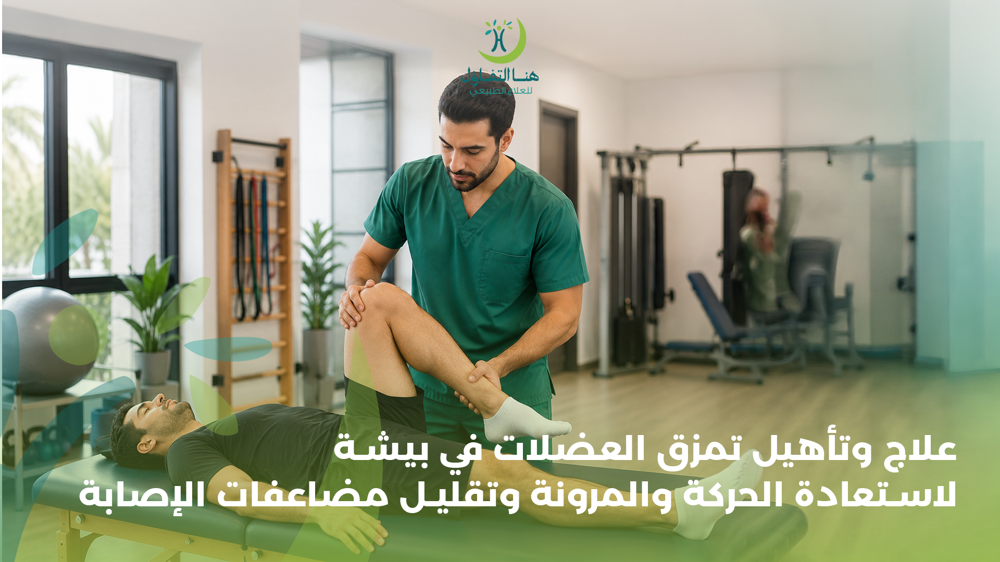

يُعد تمزق العضلات من الإصابات التي قد تؤثر على الحركة والقوة والقدرة على ممارسة الأنشطة اليومية أو الرياضية، وتختلف شدة الإصابة من حالة إلى أخرى حسب العضلة المصابة ودرجة التمزق وطريقة حدوث الإصابة.
ولا يقتصر التعامل مع تمزق العضلات على تقليل الألم فقط، بل تحتاج بعض الحالات إلى برنامج تأهيلي تدريجي يساعد على استعادة الحركة والمرونة والقوة وتحسين استخدام العضلة المصابة والعودة إلى النشاط بصورة مناسبة.
في هنا التفاؤل للعلاج الطبيعي والتأهيل الطبي في بيشة يتم التعامل مع حالات التمزقات العضلية من خلال تقييم الحالة وتحديد احتياجاتها التأهيلية، ثم بناء برنامج علاجي يتناسب مع مرحلة الإصابة وقدرة المريض على الحركة.
ما هو تمزق العضلات؟
تمزق العضلات هو إصابة تحدث عندما تتعرض ألياف العضلة للتمدد الزائد أو التمزق، وقد يحدث ذلك أثناء ممارسة الرياضة أو القيام بحركة مفاجئة أو بذل مجهود أكبر من قدرة العضلة.
وقد تكون الإصابة بسيطة ومحدودة، بينما تكون بعض الحالات أكثر شدة وتحتاج إلى فترة أطول من التأهيل والمتابعة.
ومن أكثر المناطق التي قد تتعرض للتمزقات العضلية:
- عضلات الفخذ.
- عضلات الساق.
- عضلات خلف الفخذ.
- عضلات الكتف.
- عضلات الذراع.
- عضلات الظهر.
- عضلات البطن.
- العضلات المستخدمة بشكل مكثف أثناء ممارسة الرياضة.
وتختلف الأعراض ومدة التعافي حسب شدة الإصابة ومكانها وطبيعة النشاط الذي يمارسه الشخص.
أعراض تمزق العضلات
قد تظهر مجموعة من الأعراض بعد الإصابة، وتختلف شدتها من شخص إلى آخر.
ومن الأعراض الشائعة:
- ألم في المنطقة المصابة.
- الشعور بألم عند تحريك العضلة.
- ضعف في العضلة.
- صعوبة في استخدام الطرف المصاب.
- تورم في المنطقة.
- ظهور كدمات في بعض الحالات.
- تيبس أو انخفاض في مدى الحركة.
- تشنج أو تقلصات عضلية.
- صعوبة في ممارسة النشاط الرياضي المعتاد.
تنبيه:
إذا كان الألم شديدًا أو يتزايد، أو كان هناك تورم أو كدمات كبيرة أو عدم القدرة على استخدام الطرف المصاب، فمن المهم الحصول على تقييم طبي مناسب بدلًا من الاعتماد على العلاج الذاتي فقط.
درجات تمزق العضلات
لا تكون جميع التمزقات العضلية بنفس الدرجة، ولذلك يختلف البرنامج العلاجي والتأهيلي من حالة إلى أخرى.
التمزق البسيط
يكون الضرر في عدد محدود من ألياف العضلة، وقد يظهر على شكل ألم أو ضعف محدود مع استمرار القدرة على الحركة بدرجات مختلفة.
التمزق المتوسط
يكون الضرر أكبر وقد يصاحبه ألم أو تورم أو كدمات وضعف واضح في العضلة، وقد يحتاج إلى برنامج تأهيلي أكثر تنظيمًا.
التمزق الشديد
قد يكون الضرر كبيرًا ويؤثر بصورة واضحة على وظيفة العضلة، وقد تحتاج الحالة إلى تقييم طبي متخصص لتحديد طبيعة الإصابة ومدى الحاجة إلى تدخلات إضافية قبل البدء في برنامج التأهيل.
لذلك لا يُفضل تحديد شدة الإصابة أو مدة التعافي اعتمادًا على الألم وحده؛ فالتقييم السريري يساعد على تحديد المرحلة المناسبة للعلاج.
أسباب تمزق العضلات
يمكن أن تحدث التمزقات العضلية نتيجة مجموعة من العوامل، ومن أبرزها:
- الحركة المفاجئة.
- ممارسة الرياضة دون تجهيز مناسب.
- زيادة شدة التدريب بصورة سريعة.
- إجهاد العضلة.
- الحركات التي تتطلب سرعة أو تغيير اتجاه مفاجئ.
- رفع أوزان كبيرة بطريقة غير مناسبة.
- ضعف العضلات.
- انخفاض المرونة.
- تكرار المجهود دون الحصول على فترات مناسبة للتعافي.
- العودة إلى النشاط الرياضي قبل اكتمال التأهيل.
وتظهر هذه الإصابات بصورة متكررة لدى الأشخاص الذين يمارسون الرياضات التي تتضمن الجري والقفز وتغيير الاتجاه أو الحركات السريعة.
لماذا يحتاج تمزق العضلات إلى التأهيل؟
قد يركز الشخص بعد الإصابة على التخلص من الألم، لكن عودة الألم إلى الانخفاض لا تعني بالضرورة أن العضلة استعادت كامل قوتها ووظيفتها.
قد يحتاج المريض بعد الإصابة إلى العمل تدريجيًا على:
- • استعادة مدى الحركة.
- • تحسين مرونة العضلة.
- • استعادة القوة.
- • تحسين التحكم الحركي.
- • رفع القدرة على تحمل المجهود.
- • العودة التدريجية إلى الأنشطة اليومية.
- • الاستعداد للعودة إلى الرياضة.
- • تقليل احتمالية تكرار الإصابة.
وتشير مبادئ إعادة التأهيل للإصابات العضلية والهيكلية إلى أن التأهيل يتدرج من التعامل مع المرحلة المبكرة للإصابة إلى استعادة الحركة والقوة، ثم الانتقال إلى التمارين الأكثر تحديًا والعودة إلى النشاط الرياضي.
برنامج تأهيل تمزق العضلات بالعلاج الطبيعي
لا يوجد برنامج واحد مناسب لجميع حالات التمزق العضلي، لأن الخطة تعتمد على مكان الإصابة وشدتها ومرحلة التعافي والأهداف التي يحتاج إليها المريض.
المرحلة الأولى: التعامل مع الإصابة
في المرحلة المبكرة يكون التركيز على حماية المنطقة المصابة وتقليل الأنشطة التي تزيد الألم والسماح للأنسجة ببدء التعافي.
وفي الإصابات الحادة قد يُنصح خلال الأيام الأولى بحماية المنطقة والراحة المناسبة والثلج والضغط والرفع وفق طبيعة الإصابة وإرشادات المختص. كما يُنصح بتجنب التدليك والحرارة في الأيام الأولى لبعض إصابات الشد والتمزق الحادة.
المرحلة الثانية: استعادة الحركة
مع تحسن الحالة يمكن البدء بالحركة بصورة تدريجية حسب قدرة المريض، بهدف الحد من التيبس واستعادة مدى الحركة.
ولا يعني ذلك العودة مباشرة إلى النشاط المعتاد، بل يتم اختيار الحركة المناسبة للمرحلة التي تمر بها الإصابة.
المرحلة الثالثة: تقوية العضلات
بعد تحسن الألم والحركة، يبدأ العمل تدريجيًا على استعادة قوة العضلة.
وقد تتضمن الخطة تمارين مقاومة وتمارين وظيفية يتم تطويرها تدريجيًا حسب حالة المريض.
المرحلة الرابعة: تحسين الأداء الوظيفي
عندما تستعيد العضلة جزءًا مناسبًا من قوتها وحركتها، يمكن الانتقال إلى تمارين أقرب إلى طبيعة الأنشطة التي يحتاج إليها المريض.
بالنسبة للرياضيين، قد تتضمن هذه المرحلة تدريبات مرتبطة بالجري أو القفز أو تغيير الاتجاه أو الحركات الخاصة بالرياضة، ولكن يتم إدخالها تدريجيًا وليس دفعة واحدة.
تمارين تأهيل تمزق العضلات
تختلف التمارين المناسبة حسب مكان الإصابة ودرجتها ومرحلة التعافي، ولذلك لا يُنصح بتطبيق تمارين قوية على تمزق حديث دون تقييم مناسب.
تمارين الحركة ومدى الحركة
تمارين الإطالة المناسبة للمرحلة
تمارين تقوية العضلات
تمارين المقاومة
تمارين التوازن والتحكم الحركي
تمارين وظيفية
تمارين خاصة بالرياضيين عند الحاجة
تمارين تدريجية للعودة إلى الجري أو النشاط الرياضي.
وتكون الفكرة الأساسية هي التدرج في الحمل؛ فزيادة النشاط بسرعة كبيرة قبل استعداد العضلة قد تؤدي إلى تفاقم الأعراض أو إعادة الإصابة.
علاج تمزق عضلات الفخذ
تتعرض عضلات الفخذ للعديد من الإصابات نتيجة الجري أو القفز أو تغيير الاتجاه أو المجهود الرياضي.
وقد تظهر الإصابة على شكل ألم في الفخذ مع ضعف أو صعوبة في الحركة، وقد تكون هناك كدمات أو تورم حسب شدة الإصابة.
يركز التأهيل على استعادة الحركة والقوة بصورة تدريجية، ثم تطوير القدرة على أداء الحركات التي يحتاج إليها الشخص في حياته اليومية أو نشاطه الرياضي.
علاج تمزق العضلة الخلفية للفخذ
تُعد العضلات الخلفية للفخذ من المناطق الشائعة للإصابات الرياضية، خصوصًا في الأنشطة التي تتطلب الجري السريع أو التسارع.
بعد تقييم الإصابة يمكن أن يركز البرنامج التأهيلي على:
- تقليل الألم وفق مرحلة الإصابة.
- استعادة الحركة.
- تحسين مرونة العضلات.
- تقوية العضلات الخلفية للفخذ.
- تحسين التحكم في الطرف السفلي.
- زيادة القدرة على تحمل النشاط.
- العودة التدريجية للجري والرياضة عند ملاءمة الحالة.
ولا ينبغي الانتقال إلى الجري أو التدريبات عالية الشدة لمجرد انخفاض الألم؛ فالعودة الآمنة للنشاط ترتبط أيضًا باستعادة القوة والحركة والقدرة الوظيفية.
علاج تمزق عضلات الساق
يمكن أن تحدث التمزقات في عضلات الساق نتيجة الجري أو القفز أو الحركة المفاجئة.
ويختلف العلاج حسب شدة الإصابة، لكن التأهيل قد يتضمن استعادة حركة الكاحل والركبة، وتقوية عضلات الساق تدريجيًا، ثم إدخال التمارين الوظيفية المناسبة.
وفي بعض الحالات، يمكن أن تكون العودة إلى الجري والأنشطة التي تتطلب القفز في مراحل متقدمة من التأهيل، بعد استعادة مستوى مناسب من القوة والحركة ودون وجود أعراض تمنع التقدم.
تأهيل التمزقات العضلية للرياضيين
الرياضي لا يحتاج فقط إلى القدرة على المشي دون ألم، وإنما يحتاج إلى استعادة الوظائف المرتبطة بالرياضة التي يمارسها.
فعلى سبيل المثال، قد يحتاج لاعب كرة القدم إلى استعادة قدرته على:
- الجري.
- التسارع.
- التوقف.
- تغيير الاتجاه.
- القفز.
- الركل.
- تحمل التدريبات المتكررة.
لذلك تكون العودة إلى الرياضة تدريجية، ويتم الانتقال من التمارين البسيطة إلى الأنشطة الأكثر قربًا من متطلبات الرياضة.
وتؤكد إرشادات العودة إلى الرياضة أهمية استعادة الوظيفة الخاصة بالرياضة والمهارات المرتبطة بها قبل العودة الكاملة للمنافسة.
هل يمكن العودة إلى الرياضة بعد تمزق العضلات؟
نعم،
يمكن للعديد من المصابين العودة إلى الأنشطة الرياضية بعد التعافي والتأهيل المناسب، لكن موعد العودة يختلف من إصابة إلى أخرى.
ولا توجد مدة واحدة تصلح لجميع حالات التمزق.
يعتمد القرار على عوامل مثل:
- شدة الإصابة.
- مكان التمزق.
- مستوى الألم.
- مدى الحركة.
- قوة العضلة.
- قدرة الشخص على أداء الحركات المطلوبة.
- طبيعة الرياضة.
- استجابة الجسم للبرنامج التأهيلي.
ومن علامات الجاهزية التي يمكن أن تؤخذ في الاعتبار استعادة الحركة والقوة والقدرة على أداء النشاط المطلوب دون ألم أو تورم يعيق الأداء.
أخطاء قد تؤخر التعافي من تمزق العضلات
هناك بعض الممارسات التي قد تجعل العودة للنشاط أكثر صعوبة، ومنها:
العودة السريعة للرياضة
انخفاض الألم لا يعني دائمًا أن العضلة أصبحت جاهزة للجهد العالي.
زيادة التمارين بصورة مفاجئة
التدرج مهم عند إعادة تحميل العضلة بعد الإصابة.
تجاهل الألم المتزايد
إذا بدأ الألم في الزيادة أو ظهر تورم جديد بعد رفع مستوى النشاط، فقد تحتاج الخطة إلى التعديل.
إهمال تقوية العضلة
التركيز على الإطالات فقط دون استعادة القوة قد لا يكون كافيًا للوصول إلى النشاط السابق.
ممارسة تمارين غير مناسبة لمرحلة الإصابة
التمرين المناسب في مرحلة متقدمة قد لا يكون مناسبًا في الأيام الأولى بعد الإصابة.
كيف يساعد العلاج الطبيعي في تأهيل تمزق العضلات؟
العلاج الطبيعي لا يقتصر على استخدام وسيلة علاجية واحدة، وإنما يمكن أن يتضمن مجموعة من الأساليب والتمارين التي يتم اختيارها وفق تقييم الحالة.
تخفيف الألم
من خلال الوسائل المناسبة للحالة ومرحلة الإصابة.
استعادة الحركة
بتمارين تساعد على تحسين مدى الحركة تدريجيًا.
تقوية العضلات
من خلال زيادة الحمل بصورة متدرجة.
تحسين المرونة
عند الحاجة وبما يتناسب مع مرحلة التعافي.
تحسين الحركة الوظيفية
من خلال تدريب العضلة على أداء الحركات المطلوبة.
العودة للنشاط الرياضي
عند الرياضيين، يتم إدخال التدريبات الخاصة بالرياضة تدريجيًا وفق مستوى التعافي.
متى تحتاج إلى تقييم متخصص بعد إصابة العضلات؟
ليس كل ألم عضلي يحتاج إلى جلسات علاج طبيعي، لكن التقييم يصبح أكثر أهمية عندما يكون الألم شديدًا أو مستمرًا أو عندما تؤثر الإصابة على القدرة على الحركة.
ومن الحالات التي تستدعي الحصول على تقييم طبي:
- ألم شديد بعد الإصابة.
- زيادة الألم بدلًا من تحسنه.
- تورم واضح.
- كدمات كبيرة أو متزايدة.
- ضعف شديد في العضلة.
- صعوبة في المشي أو تحميل الوزن.
- عدم القدرة على استخدام الطرف المصاب بصورة طبيعية.
- استمرار الأعراض دون تحسن.
- تكرار الإصابة في نفس العضلة.
وتوصي المصادر الطبية بالحصول على تقييم عند وجود ألم شديد أو تورم كبير أو عدم القدرة على تحمل الوزن أو استخدام الطرف بشكل طبيعي.
الفرق بين الشد العضلي وتمزق العضلات
قد يستخدم البعض المصطلحين بالتبادل، لكن شدة الإصابة يمكن أن تختلف.
الشد العضلي قد يشير إلى تمدد أو إصابة في ألياف العضلة بدرجات مختلفة، بينما التمزق العضلي يشير إلى حدوث تمزق في بعض ألياف العضلة وقد تختلف شدته.
لذلك لا يمكن تحديد نوع الإصابة أو درجتها من الألم وحده، وقد يحتاج الأمر إلى تقييم سريري، وأحيانًا فحوص إضافية حسب الحالة.
مدة التعافي من تمزق العضلات
من أكثر الأسئلة شيوعًا: كم يستغرق علاج تمزق العضلات؟
لا توجد إجابة ثابتة لجميع الحالات.
فالإصابات البسيطة قد تتحسن خلال فترة أقصر، بينما تحتاج الإصابات الأكثر شدة إلى فترة أطول من العلاج والتأهيل.
كما أن سرعة التعافي تتأثر بـ:
- درجة التمزق.
- العضلة المصابة.
- عمر المريض وحالته الصحية العامة.
- طبيعة النشاط.
- الالتزام بالتأهيل.
- الاستجابة للتمارين.
- وجود إصابات أخرى مصاحبة.
بعض إرشادات إصابات الأنسجة الرخوة تشير إلى أن التعافي قد يستغرق عدة أسابيع، بينما قد تمتد الحالات الأكثر شدة إلى فترة أطول.
تأهيل تمزق العضلات في هنا التفاؤل ببيشة
في هنا التفاؤل للعلاج الطبيعي والتأهيل الطبي يتم التعامل مع إصابات العضلات ضمن برنامج تأهيلي يراعي حالة كل شخص ومرحلة الإصابة.
ويهدف البرنامج إلى مساعدة المريض على:
- استعادة الحركة.
- تحسين مرونة العضلة.
- تقوية العضلات تدريجيًا.
- استعادة القدرة الوظيفية.
- تحسين التحكم في الحركة.
- الاستعداد للعودة إلى الأنشطة اليومية.
- التأهيل للعودة إلى النشاط الرياضي عند ملاءمة الحالة.
وتختلف تفاصيل البرنامج من شخص لآخر، لذلك يتم تحديد التمارين ومستوى المقاومة والتقدم في التأهيل وفق تقييم الحالة.
لماذا تختار العلاج الطبيعي لتأهيل تمزق العضلات؟
التأهيل المنظم يساعد على الانتقال من مرحلة الإصابة إلى استعادة الوظيفة بصورة تدريجية، بدلًا من العودة المفاجئة إلى النشاط.
ويشمل التأهيل عادة مراحل متدرجة تبدأ بحماية الأنسجة والتعامل مع الأعراض، ثم استعادة الحركة، ثم القوة، ثم تطوير القدرة الوظيفية والعودة للنشاط.
والهدف ليس فقط أن يقل الألم، وإنما أن تستعيد العضلة قدرتها على أداء وظيفتها بالشكل المناسب.
أسئلة شائعة عن علاج وتأهيل تمزق العضلات
هل العلاج الطبيعي مفيد في علاج تمزق العضلات؟
يمكن أن يساعد العلاج الطبيعي في إعادة تأهيل العديد من إصابات العضلات من خلال استعادة الحركة والقوة والمرونة والوظيفة، مع تحديد البرنامج وفق حالة الإصابة ومرحلة التعافي.
هل يمكن علاج تمزق العضلات بدون جراحة؟
تختلف طريقة العلاج حسب شدة الإصابة. بعض التمزقات يمكن التعامل معها بالعلاج المحافظ والتأهيل، بينما تحتاج الإصابات الشديدة إلى تقييم طبي لتحديد الخيارات المناسبة.
متى أبدأ تمارين التأهيل بعد تمزق العضلات؟
يعتمد توقيت بدء التمارين ونوعها على شدة الإصابة ومرحلتها. عادة يتم الانتقال إلى الحركة والتمارين بصورة تدريجية عندما تسمح الحالة، وليس وفق جدول زمني واحد لجميع المرضى.
هل أستطيع ممارسة الرياضة مع وجود تمزق عضلي؟
يفضل عدم العودة إلى الرياضة أو التدريبات الشديدة قبل التعافي المناسب، لأن العودة المبكرة قد تزيد احتمالية تفاقم الإصابة أو تكرارها. وتكون العودة تدريجية بعد استعادة الحركة والقوة والقدرة الوظيفية المطلوبة.
هل تمزق العضلات يحتاج إلى تدليك؟
التدليك ليس مناسبًا بالضرورة في المرحلة المبكرة من الإصابة؛ بعض الإرشادات الخاصة بالإصابات الحادة تنصح بتجنب التدليك خلال الأيام الأولى. يتم تحديد الوسائل اليدوية المناسبة وفق مرحلة الإصابة وتقييم المختص.
هل يمكن أن يعود تمزق العضلات مرة أخرى؟
يمكن أن تتكرر بعض الإصابات، خصوصًا عند العودة للنشاط قبل استعادة القوة والوظيفة المطلوبة أو عند زيادة الحمل التدريبي بسرعة. لذلك يركز التأهيل على استعادة القوة والحركة والعودة التدريجية للنشاط.
هل أحتاج إلى علاج طبيعي بعد كل تمزق عضلي؟
ليس بالضرورة؛ بعض الإصابات البسيطة قد تتحسن بالعناية المناسبة، بينما قد تحتاج الإصابات التي تستمر أعراضها أو تؤثر على الحركة أو النشاط الرياضي إلى تقييم وبرنامج علاج طبيعي.
متى أحتاج إلى مراجعة الطبيب بعد إصابة العضلات؟
إذا كان الألم شديدًا، أو يزداد بدلًا من التحسن، أو يوجد تورم أو كدمات كبيرة، أو صعوبة في المشي أو استخدام الطرف المصاب، فمن الأفضل الحصول على تقييم طبي مناسب.
احجز استشارتك في مركز هنا التفاؤل ببيشة
إذا كنت تعاني من ألم أو ضعف بعد إصابة عضلية أو ترغب في استعادة نشاطك الرياضي بعد التمزق، فلا تؤجل التقييم. يساعد التشخيص المبكر على وضع خطة علاجية مناسبة قد تساهم في استعادة الحركة والمرونة والقوة.